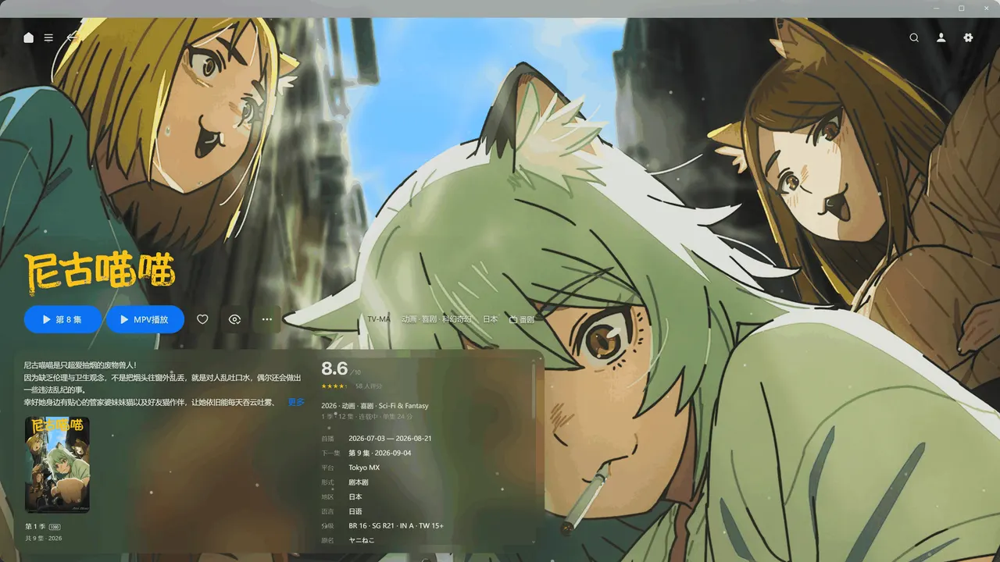
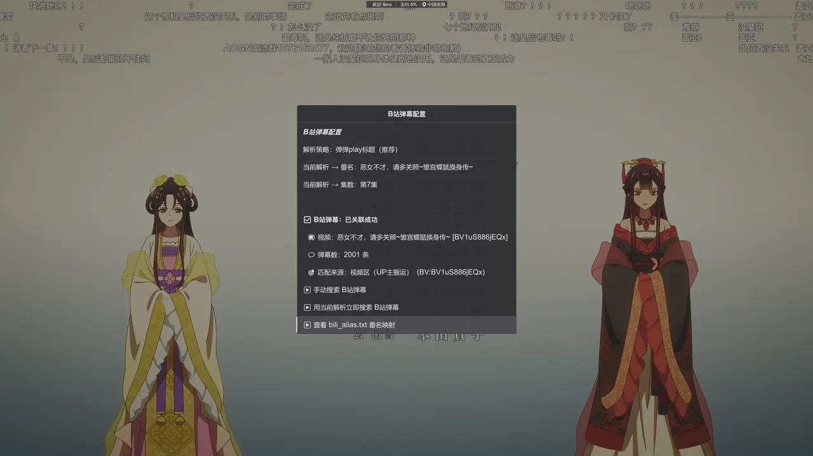
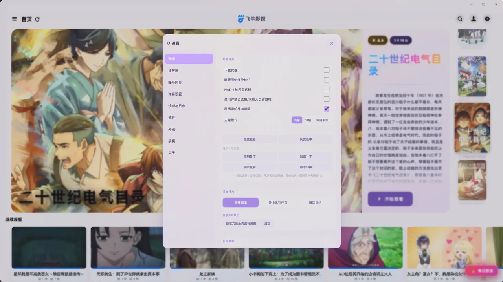
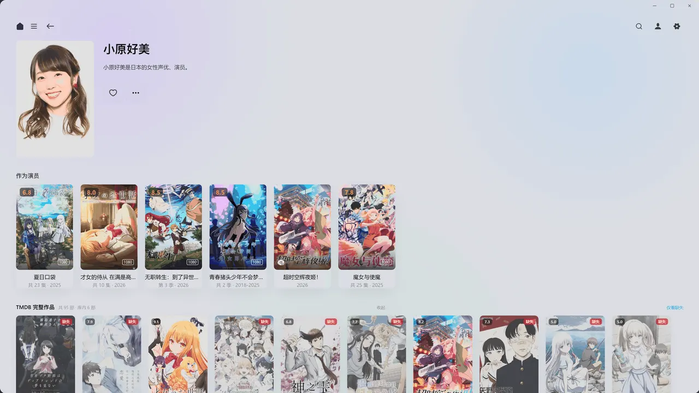
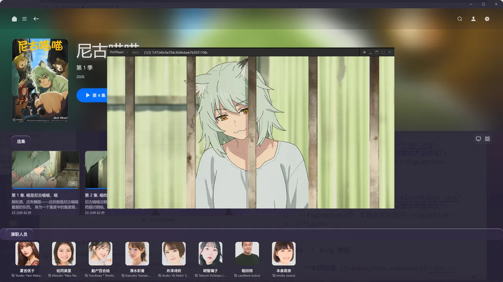
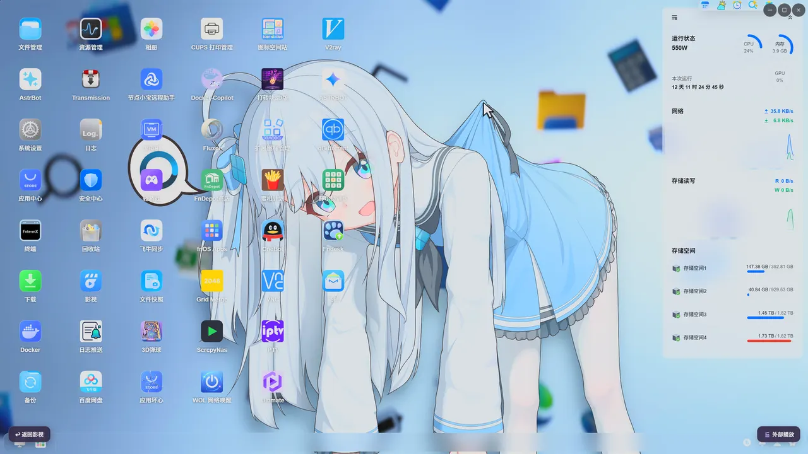

01 — 界面
不是套个网页外壳
是整套视觉重做
把鼠标移到任意一栏看细节：轮播墙、沉浸式详情、B 站弹幕，都是实际运行界面。
3D 首页轮播墙
四种轮播样式可切换（竖向 / 横向 / 堆叠 / 立体堆叠），标题用 TMDB 透明 Logo 替换，背景按当前海报自动取色。

沉浸式剧集详情
Netflix 风格首屏：大背板 + 玻璃信息层 + 展开收起；选集、演职人员、剧集卡片都能一键回填 TMDB / Bangumi 元数据。

B 站弹幕与播放增强
内置降级源 + 弹弹 play + 自建弹幕接口三段式，支持合集按集取分 P、手动锁定弹幕源；再叠加插帧与智能跳过片头片尾。
02 — 能力
从视觉到播放链路
一整套重做

视觉重塑
亚克力玻璃与云母质感、透明度与模糊可调、页面过渡与卡片入场动画；低配机可开「性能模式」一键压掉全部特效，也能回退原生 NAS 界面。

观影档案
豆瓣 / Bangumi / Trakt 多站观看记录同步，TMDB、Fanart、TVMaze、OMDb、MAL 多源元数据回填，演员作品库与年度观影报告，把散落的记录织成一份档案。

播放增强
内置 MPV 与 PotPlayer 外链播放，本地 Go 代理中转流媒体，插帧与渲染预设可选。

操控与细节
手柄全键盘导航、鼠标横向滚轮、播放记忆与自动连播、诊断面板与一键导出日志反馈。
03 — 关于
Fntv-Plus 是一个基于飞牛影视 Web 端的第三方桌面客户端。它不做另起炉灶的播放器，而是在你熟悉的界面之上，把视觉、元数据、同步与播放链路一层层补完 —— 让 NAS 里的片子，看起来、用起来都像一间属于自己的影院。项目在 2026 年 9 月脱离上游 fork 网络独立发展，沿用 GPL-3.0 许可证，代码、更新与补丁全部公开在 GitHub。
04 — 常见问题
你可能想问
没有关系。这是作者个人的学习 / 练习作品，与飞牛影视官方无任何关联或合作。它通过在官方 Web 端之上做注入式修改实现增强，可能因官方更新而失效，不保证长期稳定可用。
登录走官方页面，Cookie 与第三方授权（豆瓣 / Bangumi / Trakt / B 站）都只加密保存在本机。项目自带匿名统计用于了解使用人数，只上报「随机匿名 ID + 版本号 + 系统类型」，不采集账号、IP、媒体库或文件路径，也可在设置里一键关闭并重置匿名 ID。
Windows（NSIS 安装包）、macOS（DMG，x64 / arm64）、Linux（AppImage，x64 / arm64）。应用内可检查更新，也支持热补丁 —— 小修小补不用重装。更新只从本项目 GitHub / Gitee 官方渠道获取。
设置面板「诊断与日志」里可以直接写描述提交，也能一键附带脱敏后的日志（账号、令牌、密钥一律打码）；不方便联网时还可导出日志文件手动发我。